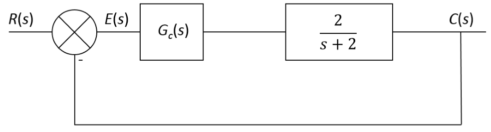
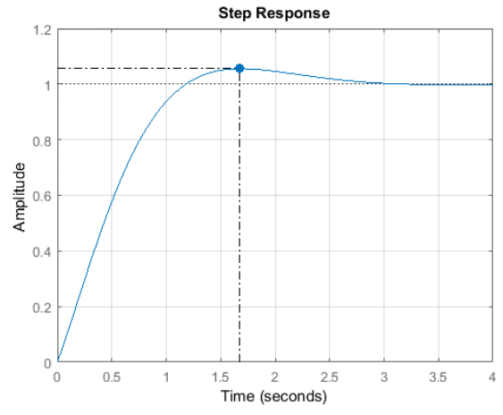
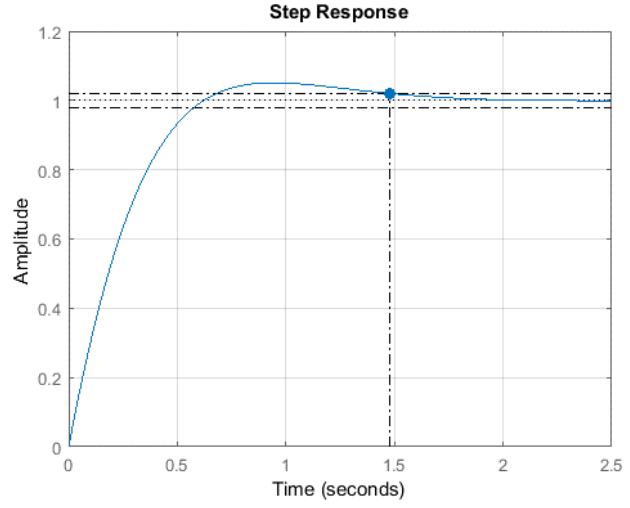
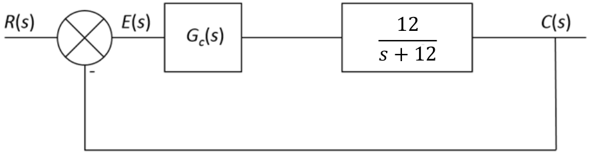

Introduction
PID Controllers
-
Gain Design
-
The Ziegler Nichols tuning method produces a very fast and often overly aggressive response, potentially damaging to actuators and amplifiers.
-
As engineers, we want to be able to design the response of the system for a particular peak time or settling time for example.
-
If we can design the response of the system then clearly we can design for a desired response which is the central goal of control engineering.
-
-
Example 1
-
Consider the following first order system where \(G_c(s)\) is the controller we need to design in order to achieve a desired response:

-
From control theory, we know that the peak time of a second order system is defined as:
\[T_p = \frac{\pi}{\omega_d}\]
Where... \[ \omega_d = \omega_n \sqrt{1 - \xi^2}\]
-
And the settling time can be defined as:
\[T_s = \frac{4}{\xi\omega_n}\]
-
The transfer function of a PI controller is defined as:
\[G_{PI}(s) = \frac{K_ps + k_i}{s}\]
-
-
The open loop transfer function of our system including the PI controller is:
\[G(s) = \frac{2k_ps + 2k_i}{s^2 +2s}\]
- The closed loop transfer function is therefore:
\[ T(s) = \frac{2k_ps + 2k_i}{s^2 + s(2+sk_p)+2k_i}\]
-
Comparing the denominator of the closed loop system to the standard form of a second order system we note that:
\[2+2k_p = 2\xi\omega_n\]
-
And that:
\[2k_i = \omega^2_n\]
Let us design a system with a peak time of less than 2s and a damping factor of 0.7:
\[T_p = \frac{\pi}{\omega_n\sqrt{1-\xi^2}}\ \Rightarrow 2 = \frac{\pi}{\omega_n\sqrt{1-0.7^2}} \]
- So \(\omega_n\) = 2.2 rads/s
System Response with Designed Gains:
- We can see that the peak time is less than 2s as required.

Example 2:
- Let us design the system with a settling time of less than 1.5s and a damping factor of 0.8:
\[T_s = \frac{4}{\xi\omega_n}\]
- So \(\omega_n\) = 3.34 rads/s
System Response with Designed Gains:
- We can see that the peak time is less than 2s as required.

Question 1:
For the following system design a PI controller that will result in a Peak Time of less than 0.5s and a damping factor of 0.75:

Answer...
\[K_p = 0.1\] \[Ki = 7.52\]